← 返回阅读库 · 原论文目录
论文讲解阅读文档 · 论文精读 · v231
云组会 ｜ 5分钟速通4大视频生成顶会论文！
视频时长 00:04:32；讲解文字 1,343 字符；提取讲解画面 62 张。按视频原顺序阅读，每段文字保留时间戳。
文字来自整段视频的自动语音转写，按自然停顿分段，并与 PPT / 论文页面 / 演示画面对齐。未将讲解压缩为摘要；术语、数字和口述公式请结合画面及原论文核对。 阅读稿已校正规范部分明确术语误识别；原始逐字稿和每处修改记录另行保留。
讲解画面为源视频截图（640×360），不是可编辑 PPT 文件。全片按每秒 2 帧扫描内容变化，逐步展开页保留；连续动画保留代表画面。清晰度受源视频限制。
下载完整资料包 · 含离线 HTML、PDF、Word、全部 PPT 画面和字幕。
原论文与材料
Tora: Trajectory-oriented Diffusion Transformer for Video Generation · 下载完整 PDF（17 页）
MAGREF: Masked Guidance for Any-Reference Video Generation with Subject Disentanglement · 下载完整 PDF（32 页）
3D Moments from Near-Duplicate Photos · 下载完整 PDF（10 页）
FateZero: Fusing Attentions for Zero-shot Text-based Video Editing · 下载完整 PDF（13 页）
按时间阅读
00:00:00–00:00:04 · 画面 001
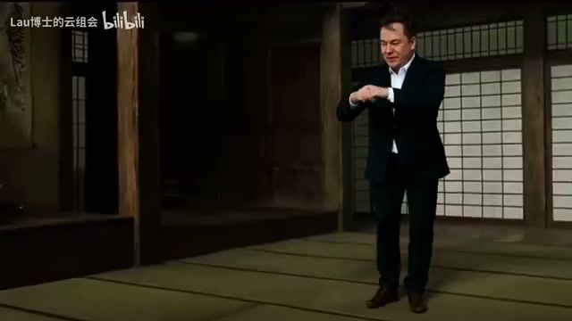
00:00:00–00:00:04 · 画面 00100:00:04–00:00:08 · 画面 002
00:00:04–00:00:08 · 画面 00200:00:08–00:00:12 · 画面 003
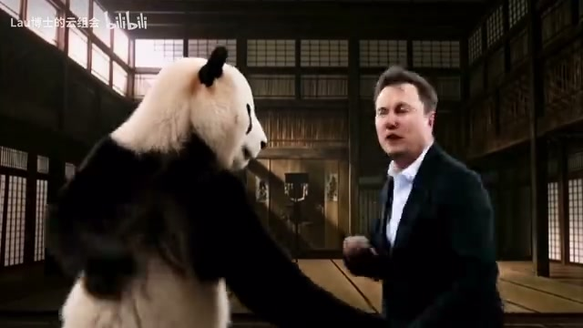
00:00:08–00:00:12 · 画面 00300:00:12–00:00:16 · 画面 004
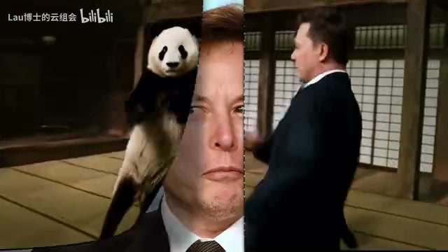
00:00:12–00:00:16 · 画面 004没错，现在我们所看到的画面和音效都是由 AI 一键生成的。当 DC 还在被幻觉问题困扰时，影视导演已经在用 AI 生成工业级的电影画面。此前，AI 生成视频的扭曲角色、面部模糊、画面一致性差等问题，是如何被前沿的技术一一解决的呢？今天我们通过一系列的视频生成领域的前沿研究
00:00:16–00:00:20 · 画面 005
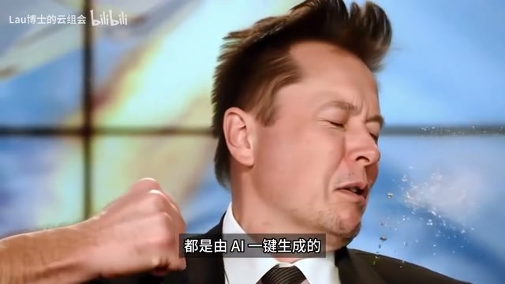
00:00:16–00:00:20 · 画面 00500:00:20–00:00:24 · 画面 006
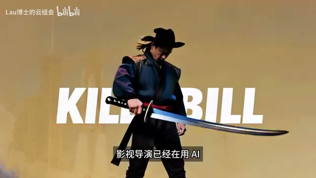
00:00:20–00:00:24 · 画面 00600:00:24–00:00:28 · 画面 007
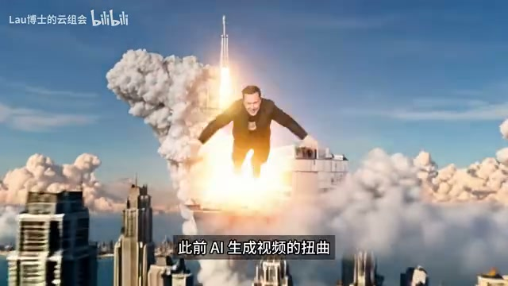
00:00:24–00:00:28 · 画面 00700:00:28–00:00:32 · 画面 008
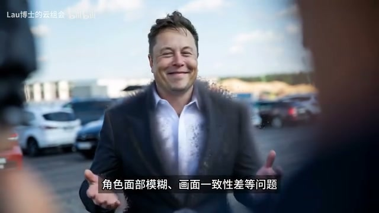
00:00:28–00:00:32 · 画面 00800:00:32–00:00:36 · 画面 009
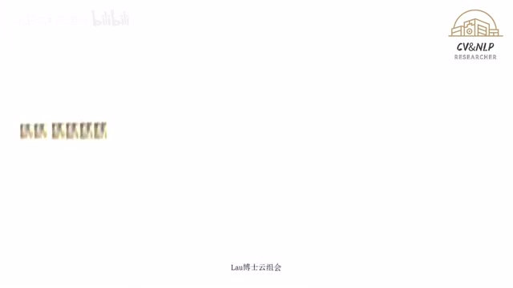
00:00:32–00:00:36 · 画面 00900:00:36–00:00:40 · 画面 010
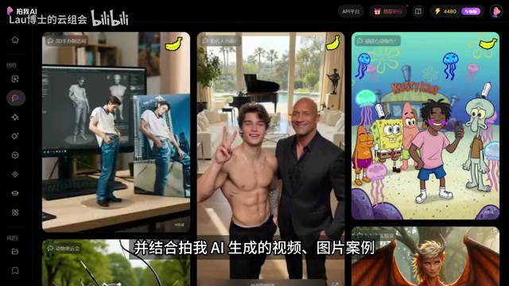
00:00:36–00:00:40 · 画面 010并结合拍我 AI 生成的视频图片案例，用大家听得懂的人话，深入这些技术难题的核心。云组会论文精读系列：视频生成新突破。欢迎来到六博士的云组会，我每周都将至少有一篇高质量的论文精读发布出来。相信在一系列的论文学习以后，第一就能成为人工智能领域的专家。先问大家一个问题，如果我们现在有两张不同时期的马斯克的照片，怎么样？马斯克完成酷炫的蜕变
00:00:40–00:00:44 · 画面 011
00:00:40–00:00:44 · 画面 01100:00:44–00:00:48 · 画面 012
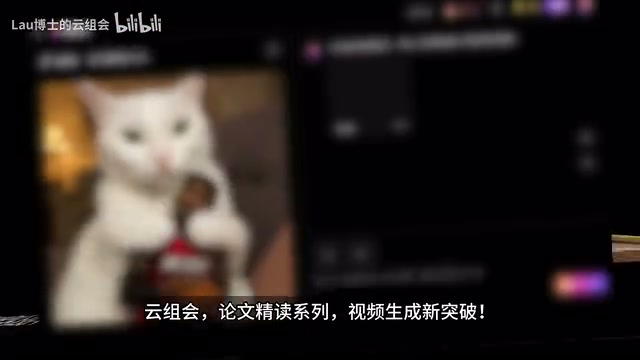
00:00:44–00:00:48 · 画面 01200:00:48–00:00:52 · 画面 013
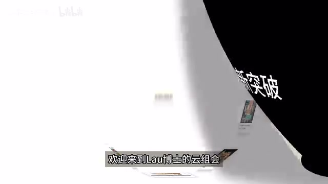
00:00:48–00:00:52 · 画面 01300:00:52–00:00:56 · 画面 014
00:00:52–00:00:56 · 画面 01400:00:56–00:00:59 · 画面 015
00:00:56–00:00:59 · 画面 01500:00:59–00:01:01 · 画面 016
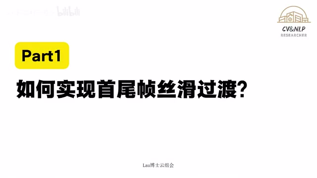
00:00:59–00:01:01 · 画面 01600:01:01–00:01:03 · 画面 017
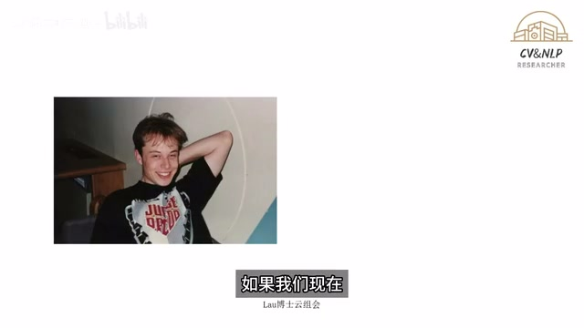
00:01:01–00:01:03 · 画面 01700:01:03–00:01:07 · 画面 018
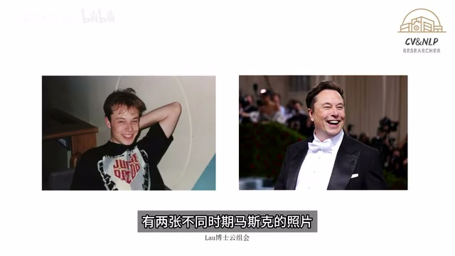
00:01:03–00:01:07 · 画面 018今天第一项技术：双图生成动态过渡，就能实现它的核心是把静态转动态这个难题拆解成建模场景和补全运动两步
00:01:07–00:01:11 · 画面 019
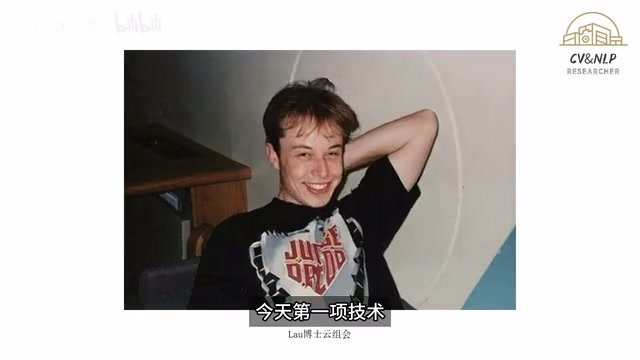
00:01:07–00:01:11 · 画面 01900:01:11–00:01:15 · 画面 020
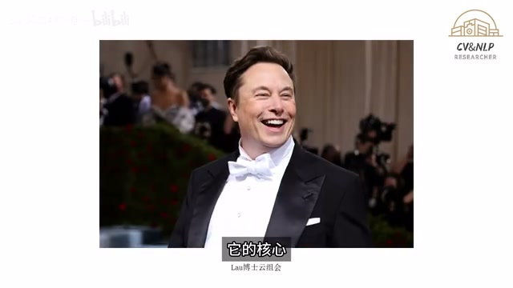
00:01:11–00:01:15 · 画面 02000:01:15–00:01:19 · 画面 021
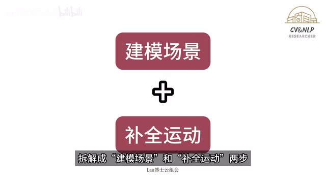
00:01:15–00:01:19 · 画面 021这背后要用到 3D Moments 的论文的核心思路。首先给每张照片键分成深度图像，就像把场景按远镜形成了好几层，比如马斯克的身体是前景层，背景的墙壁是后景层。接着用深度估计算出每个层的 3D 位置，再用光流技术找出两张图中物体的运动方向，形成了场景流
00:01:19–00:01:21 · 画面 022
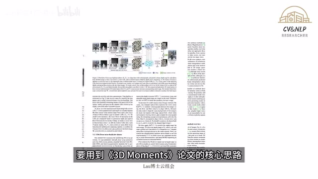
00:01:19–00:01:21 · 画面 02200:01:21–00:01:22 · 画面 023
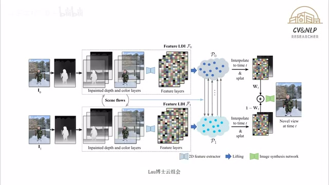
00:01:21–00:01:22 · 画面 02300:01:22–00:01:29 · 画面 024
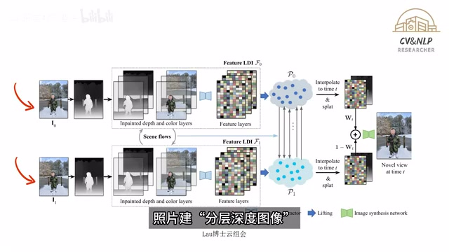
00:01:22–00:01:29 · 画面 02400:01:29–00:01:30 · 画面 025
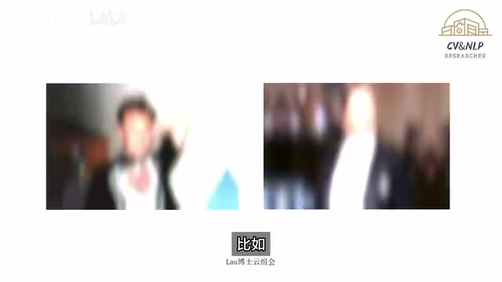
00:01:29–00:01:30 · 画面 02500:01:30–00:01:35 · 画面 026
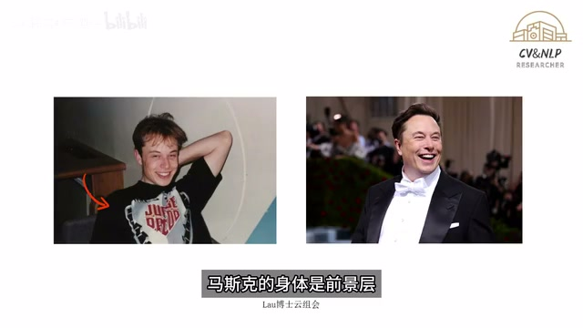
00:01:30–00:01:35 · 画面 02600:01:35–00:01:47 · 画面 027
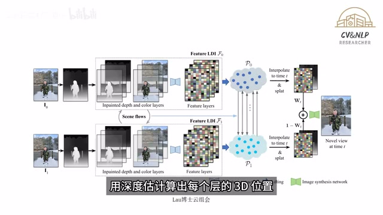
00:01:35–00:01:47 · 画面 027最后通过双向的渲染把两张图的特征按场景流慢慢融合六博士记得 AI 视频刚出来的时候人物和背景经常是杂用在一起的非常的抽象通过 3D Moments 的这类分层建模的技术彻底的解决了这个问题刚才我们让静态的照片动了起来那怎么样镜头也动得有电影感呢?
00:01:47–00:01:51 · 画面 028
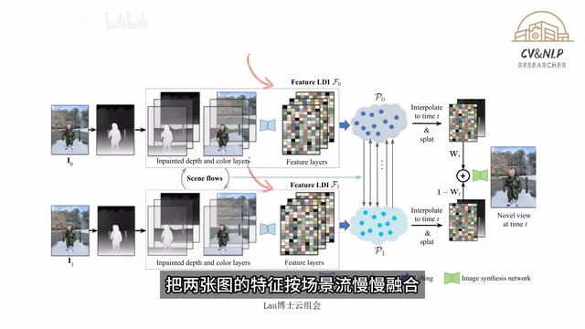
00:01:47–00:01:51 · 画面 02800:01:51–00:01:55 · 画面 029
00:01:51–00:01:55 · 画面 02900:01:55–00:01:59 · 画面 030
00:01:55–00:01:59 · 画面 03000:01:59–00:02:03 · 画面 031
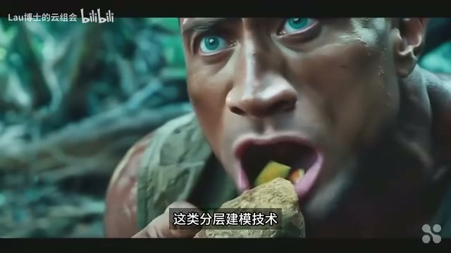
00:01:59–00:02:03 · 画面 03100:02:03–00:02:07 · 画面 032
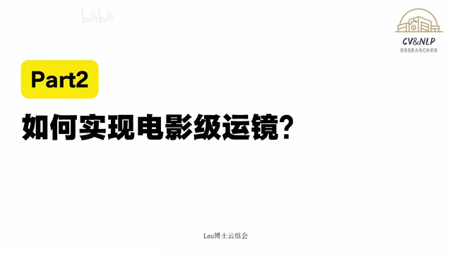
00:02:03–00:02:07 · 画面 03200:02:07–00:02:11 · 画面 033
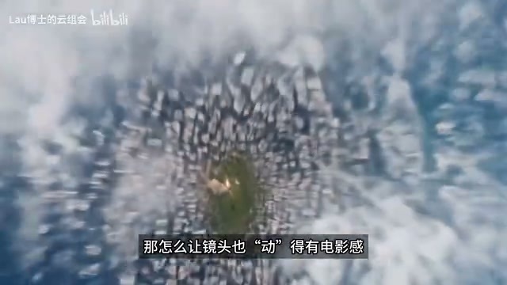
00:02:07–00:02:11 · 画面 033比如想拍马斯克站在豪宅前拍照，镜头能跟着他从特写到全景，这就需要电影级的运镜控制技术。Tora 这篇文章就正好给出了答案，它的秘诀就在于让轨迹指挥镜头。首先通过轨迹提取器把我们想要的运动路径转化成模型轮动的运动固定在这里，用了 3D VAE 压缩，确保了和视频特征在同一个空间
00:02:11–00:02:15 · 画面 034
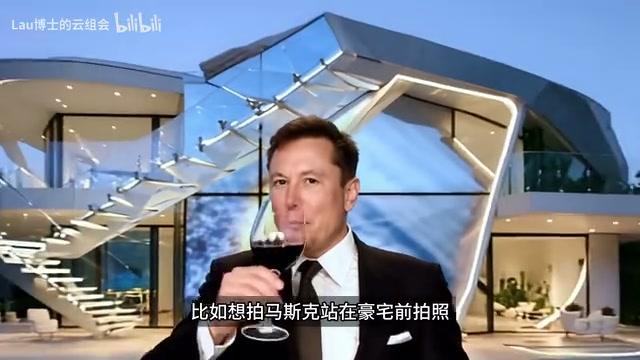
00:02:11–00:02:15 · 画面 03400:02:15–00:02:19 · 画面 035
00:02:15–00:02:19 · 画面 03500:02:19–00:02:22 · 画面 036
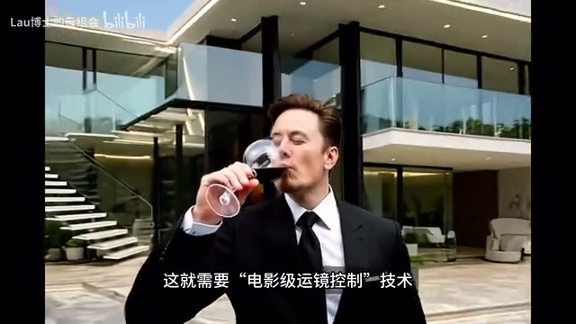
00:02:19–00:02:22 · 画面 03600:02:22–00:02:26 · 画面 037
00:02:22–00:02:26 · 画面 03700:02:26–00:02:28 · 画面 038
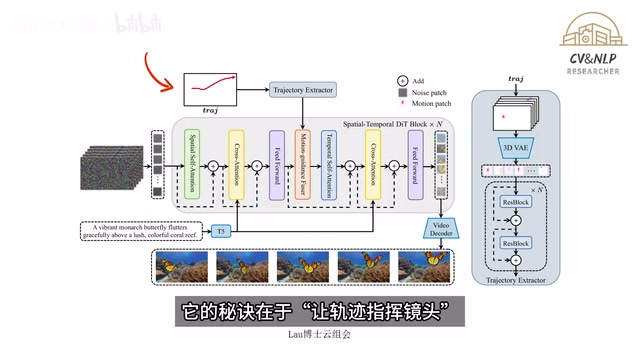
00:02:26–00:02:28 · 画面 03800:02:28–00:02:48 · 画面 039
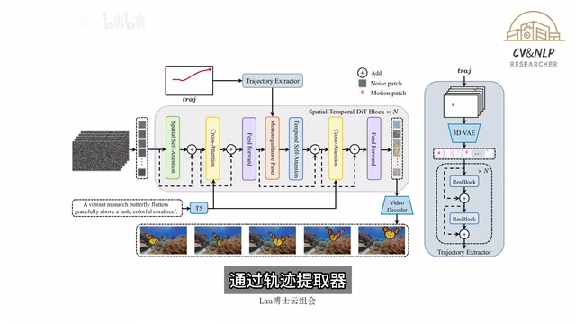
00:02:28–00:02:48 · 画面 039然后用运动引导融合器，通过自适应归一化层把运动补丁柔和的注入到 DIT 模型，不会打乱原有的画面内容。那在让镜头动起来之后呢？假设还想给视频换个风格，比如把马斯克一键改成我的世界像素风，那这就要用到视频风格迁移技术
00:02:48–00:02:49 · 画面 040
00:02:48–00:02:49 · 画面 04000:02:49–00:02:53 · 画面 041
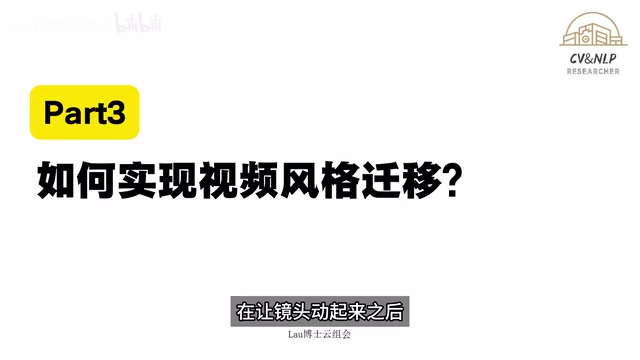
00:02:49–00:02:53 · 画面 04100:02:53–00:02:57 · 画面 042
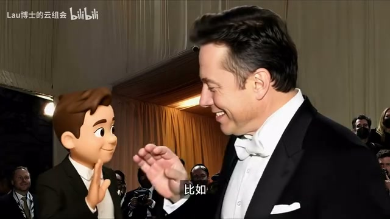
00:02:53–00:02:57 · 画面 04200:02:57–00:03:01 · 画面 043
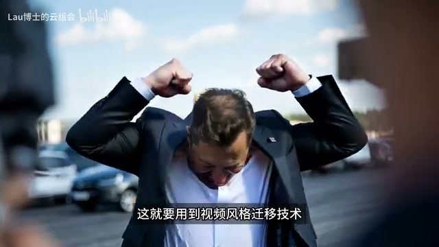
00:02:57–00:03:01 · 画面 043FateZero 的论文就揭秘了他不还车的秘密。传统的方法改风格很容易跑偏，画面的颜色会不停的闪烁，视觉上感到不适。而这个技术的关键是锁定原视频的骨架，首先通过 DDIM 反转把原视频的注意力图保存下来，这些图就像是设计笛稿，记录着马斯克的动作轨迹和身体轮廓。然后再生成新风格时，用原注意力图做掩码
00:03:01–00:03:05 · 画面 044
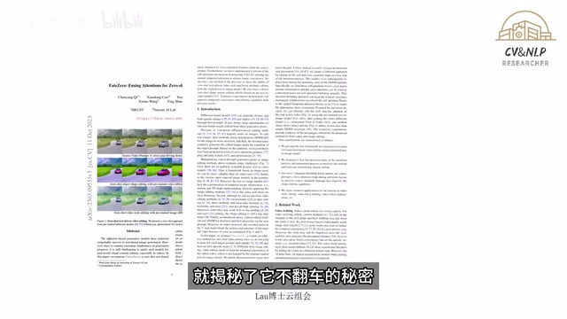
00:03:01–00:03:05 · 画面 04400:03:05–00:03:09 · 画面 045
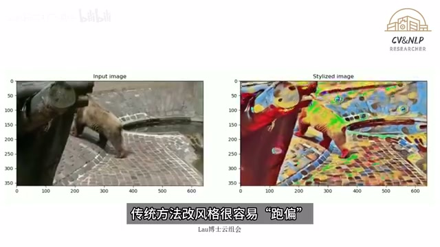
00:03:05–00:03:09 · 画面 04500:03:09–00:03:10 · 画面 046
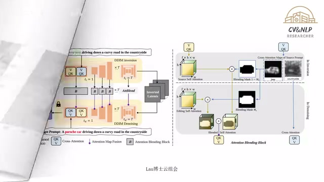
00:03:09–00:03:10 · 画面 04600:03:10–00:03:25 · 画面 047
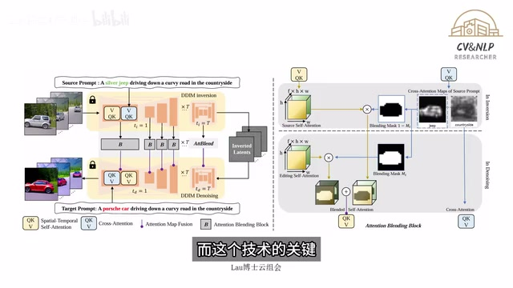
00:03:10–00:03:25 · 画面 04700:03:25–00:03:26 · 画面 048
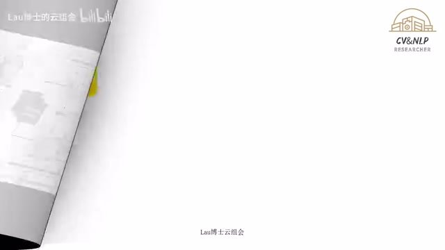
00:03:25–00:03:26 · 画面 04800:03:26–00:03:30 · 画面 049
00:03:26–00:03:30 · 画面 049前面讲的都是单主体的场景如果想让马斯克和熊猫两个目标一起动起来怎么样去避免它们粘在一起呢?MAGREF 论文的多主体独立运动的技术就能解决这个痛点
00:03:30–00:03:34 · 画面 050
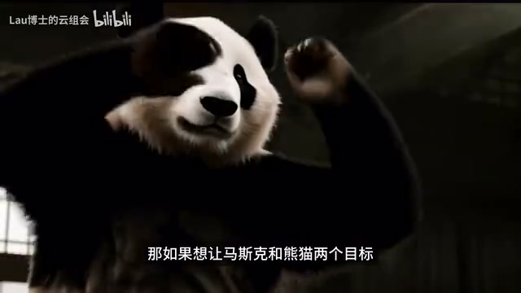
00:03:30–00:03:34 · 画面 05000:03:34–00:03:38 · 画面 051
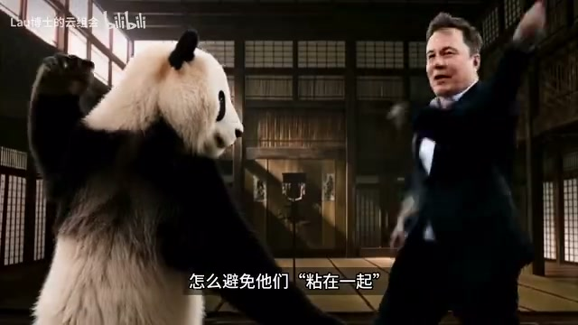
00:03:34–00:03:38 · 画面 05100:03:38–00:03:39 · 画面 052
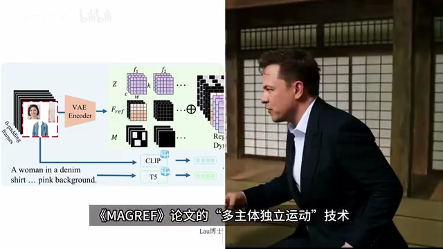
00:03:38–00:03:39 · 画面 05200:03:39–00:04:03 · 画面 053
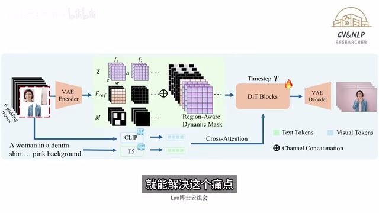
00:03:39–00:04:03 · 画面 053它的核心思想是给每个主体画专属运动区。首先把不同角色的参考图放在一张画布上，用动态掩码标出每个人的位置，就像给他们各自划了一块活动范围。然后通过像素级的通道拼接，把每个人的细节特征精准的注入模型，不会像传统方法那样捆在一起。生成视频的时候，模型会根据掩码样不同的人物做独立的动作
00:04:03–00:04:07 · 画面 054
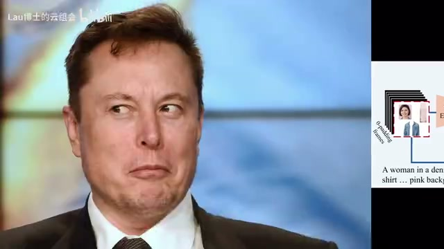
00:04:03–00:04:07 · 画面 05400:04:07–00:04:11 · 画面 055
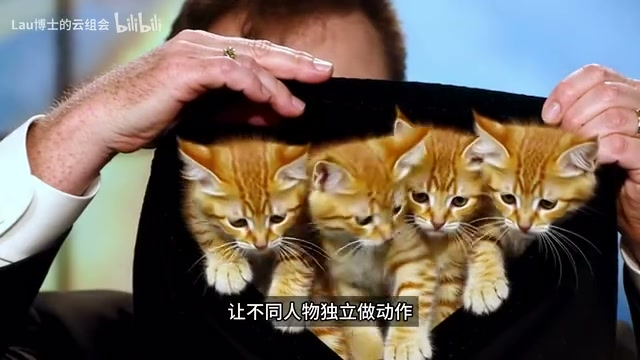
00:04:07–00:04:11 · 画面 055互不干扰。刚刚视频中所用到的所有画面均由派我 AI 生成。从画面可以看出，派我 AI 在各类的场景表现上都有着非常好的生成效果。另外值得一提的是，派我 AI 新推出的一种功能，让视频生成更稳定，支持定制化的输出，更适合商业用途，不管是自媒体、电商还是电视广告都可以使用
00:04:11–00:04:15 · 画面 056
00:04:11–00:04:15 · 画面 05600:04:15–00:04:19 · 画面 057
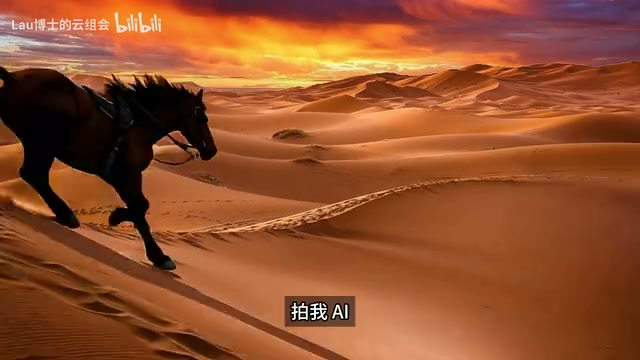
00:04:15–00:04:19 · 画面 05700:04:19–00:04:23 · 画面 058
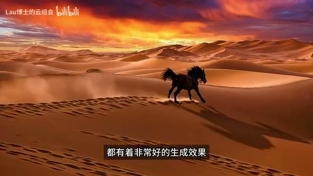
00:04:19–00:04:23 · 画面 05800:04:23–00:04:27 · 画面 059
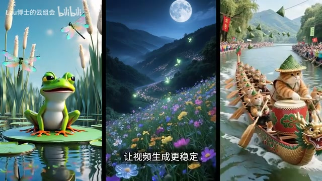
00:04:23–00:04:27 · 画面 05900:04:27–00:04:31 · 画面 060
00:04:27–00:04:31 · 画面 06000:04:31–00:04:32 · 画面 061
00:04:31–00:04:32 · 画面 06100:04:32–00:04:32 · 画面 062
00:04:32–00:04:32 · 画面 062转写与来源说明 · 0 个自动复核提示
保留 11 个原始语音片段，0 个片段触发自动复核提示。提示仅用于定位可能的术语、重复或识别问题，不等于已确认错误。
讲解画面为源视频截图（640×360），不是可编辑 PPT 文件。全片按每秒 2 帧扫描内容变化，逐步展开页保留；连续动画保留代表画面。清晰度受源视频限制。
原视频：paper/合集_2026-10-16_论文精读/云组会 ｜ 5分钟速通4大视频生成顶会论文！.mp4
SHA-256：a9ba94015a221dbb7af24c5584a5d2b8292d35a6602b252c0b8bd0e9e81bc9a8
全文按视频语音与画面制作。原论文可从上方链接下载；完整资料包保留全文、原始逐字稿、字幕和校对记录。